01 · milo.harvest.berries.3q:default
Candidate — pending owner review
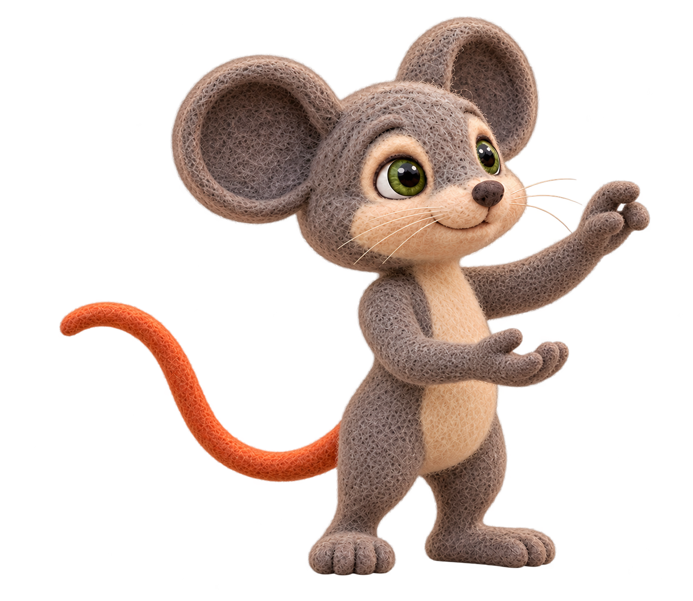
Full-body berry reach with separate receiving hand, visible upper chest, closed mouth, complete ears feet and tail. Contact geometry and proportion match need owner review; no approval inferred.
milo_harvest_berries_3q_r001_candidate.png
Scene uses: S01-L004-B02-I01
Owner verdict: pending
02 · milo.acorn.pick_hold.3q:approach
Candidate — pending owner review
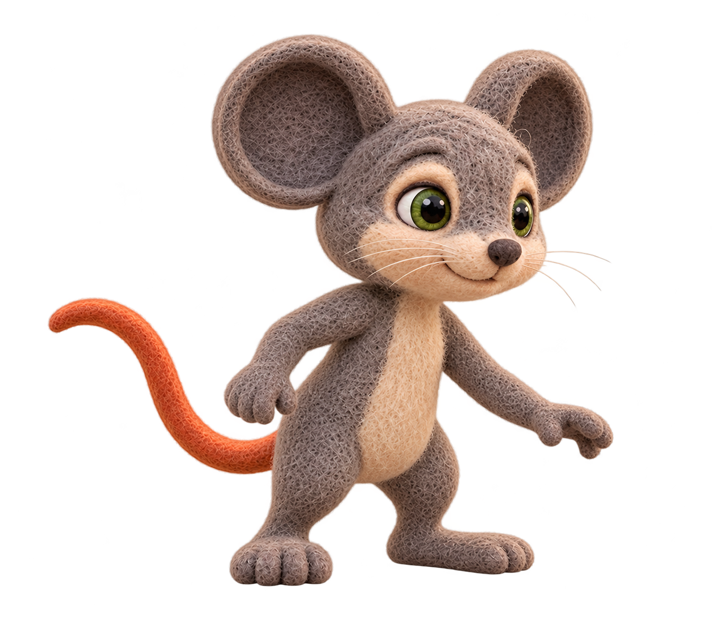
Shallow bent-knee empty-handed approach; complete silhouette and closed mouth. Reach is near hip rather than ground level; prop/depth placement must be checked, not assumed a completed pickup.
milo_acorn_pick_hold_3q_approach_r001_candidate.png
Scene uses: S01-L004-B03-I01
Owner verdict: pending
03 · milo.acorn.pick_hold.3q:hold
Candidate — pending owner review
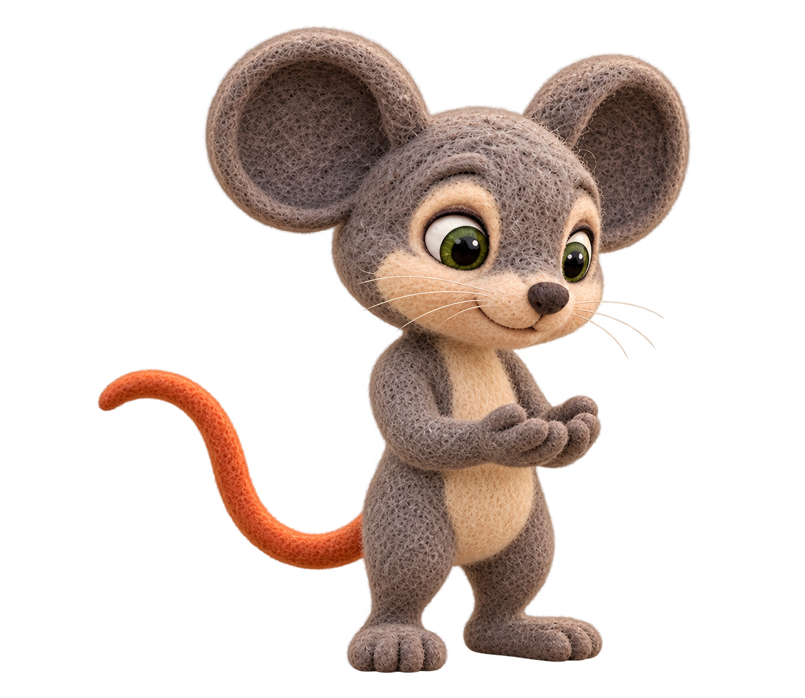
Upright cupped-hands pickup end with downward gaze; intact ears feet tail and closed toothless mouth. Head/body balance and future acorn grip require owner review.
milo_acorn_pick_hold_3q_hold_r001_candidate.png
Scene uses: S01-L004-B03-I02
Owner verdict: pending
04 · milo.acorn.pick_hold.3q:savor
Candidate — pending owner review
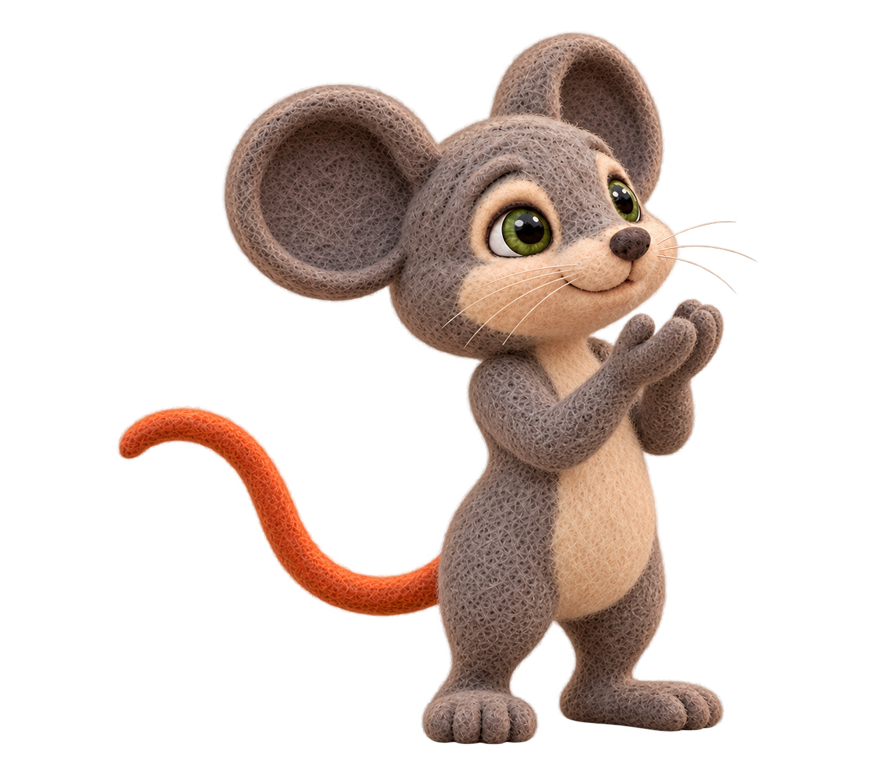
Raised cupped hands below closed muzzle, full silhouette and no teeth. Gaze is upward rather than clearly at acorn; owner must review enjoyment acting and prop-space usability.
milo_acorn_pick_hold_3q_savor_r001_candidate.png
Scene uses: S01-L004-B03-I03
Owner verdict: pending
05 · milo.acorn.hold.3q:default
Candidate — pending owner review
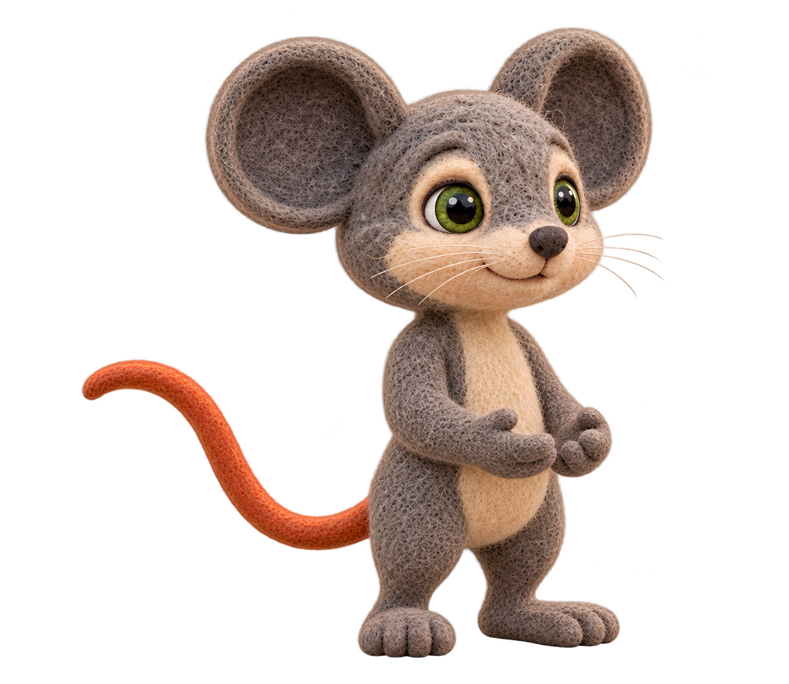
Stationary waist-level cupped grip, forward-right gaze, visible upper chest; ears tail and feet complete, closed mouth. Empty hand gap must be checked against actual acorn size before scene use.
milo_acorn_hold_3q_r001_candidate.png
Scene uses: S02-L001-B01-I01, S02-L001-B01-I02, S02-L004-B01-I01, S02-L004-B01-I02
Owner verdict: pending
06 · milo.acorn.place.3q:hold
Candidate — pending owner review
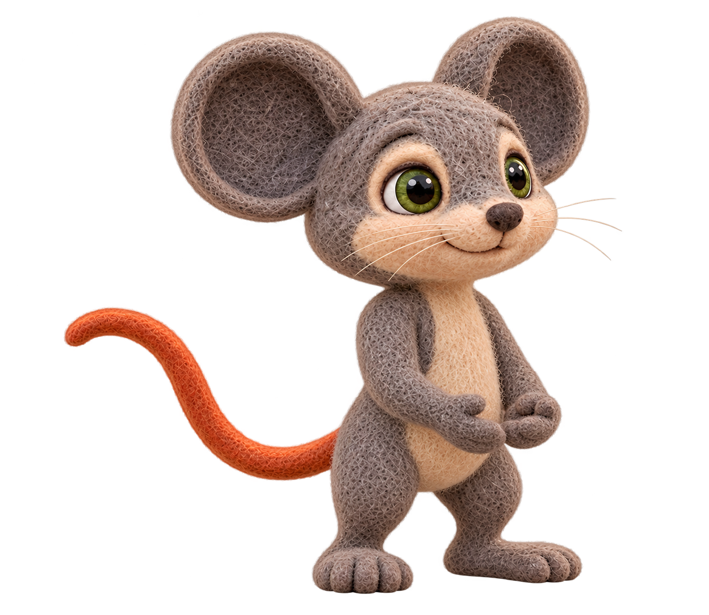
Placement start: shallow knee bend, low cupped hands and full body. Gaze remains forward/up rather than toward intended stone; hand/prop alignment and same-depth anatomy need scene review.
milo_acorn_place_3q_hold_r001_candidate.png
Scene uses: S02-L004-B02-I01
Owner verdict: pending
07 · milo.acorn.place.3q:lower
Candidate — pending owner review
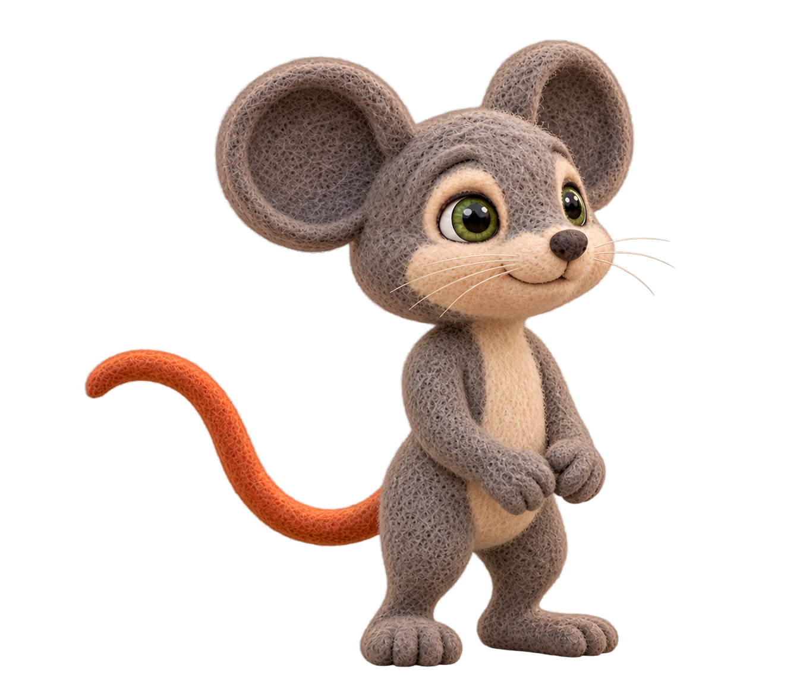
Hands lower near belly but requested forward stone-height lowering is weak; body remains mostly upright and gaze forward/up. Candidate does not establish continuous placement motion by itself. Complete silhouette, closed mouth and no visible teeth.
milo_acorn_place_3q_lower_r001_candidate.png
Scene uses: S02-L004-B02-I02
Owner verdict: pending
08 · milo.acorn.place.3q:released
Candidate — pending owner review
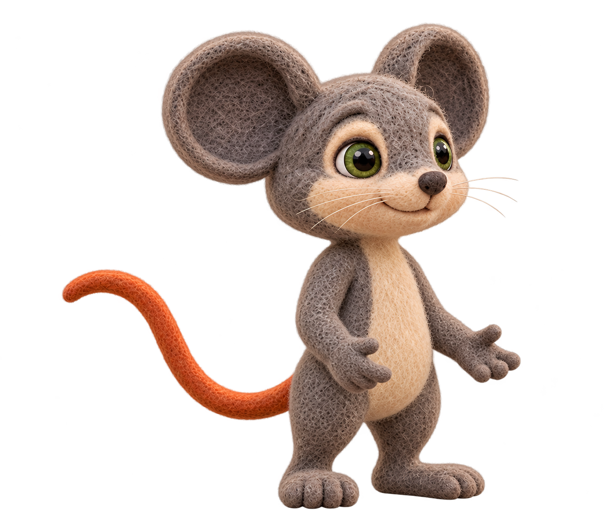
Open empty hands distinguish release from cupped grip. Hands/body return relatively upright rather than holding the low placement endpoint; continuous contact path not validated. Full silhouette and closed toothless mouth.
milo_acorn_place_3q_released_r001_candidate.png
Scene uses: S02-L004-B02-I03
Owner verdict: pending
09 · milo.decision.stationary.3q:forward
Candidate — pending owner review
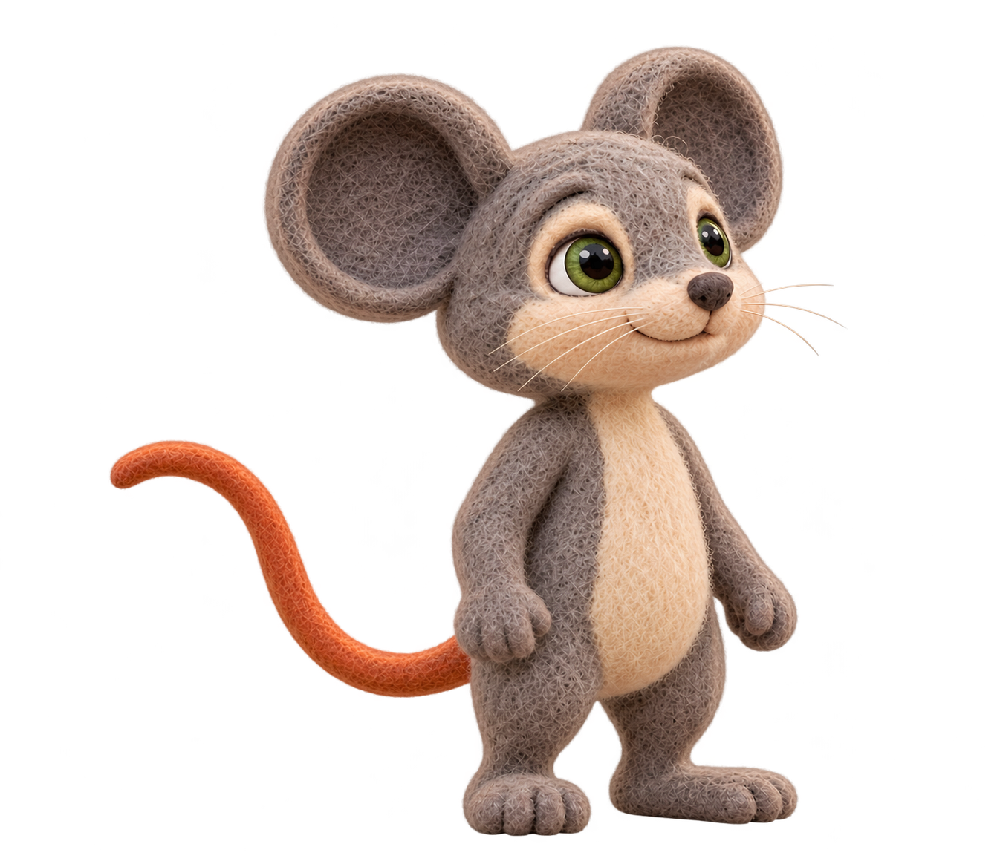
Stationary forward-right body and empty hands; gaze still slightly upward. No walking commitment. Full silhouette, closed mouth; same-root/body projection relative to sky source not measured or pixel-locked.
milo_decision_stationary_3q_forward_r001_candidate.png
Scene uses: S03-L001-B01-I01, S03-L001-B01-I02, S03-L002-B01-I01, S03-L002-B01-I02, S03-L003-B01-I01, S03-L003-B01-I02, S03-L004-B01-I01, S03-L004-B01-I02, S03-L005-B01-I01, S03-L005-B01-I02, S03-L006-B01-I01
Owner verdict: pending
10 · milo.decision.stationary.3q:long_path
Candidate — pending owner review
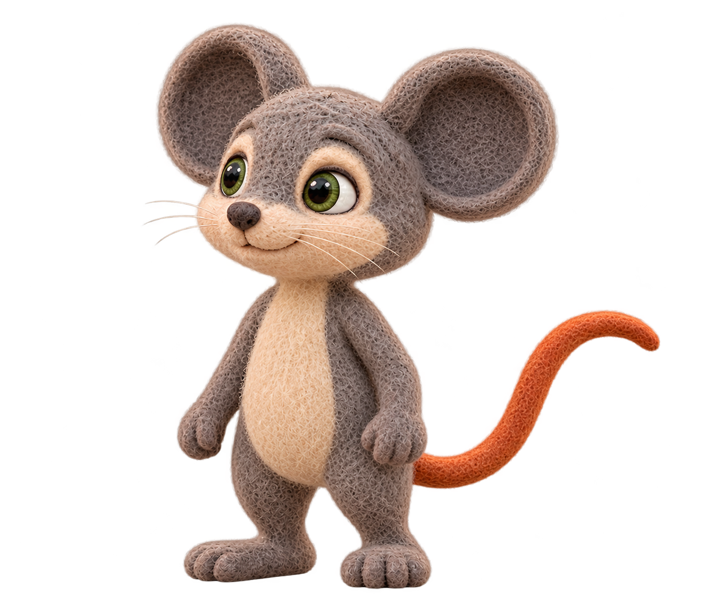
Confirmed requested-pose mismatch: entire body/feet and tail orientation turn or mirror left rather than preserving screen-right stationary sky body while changing only head/eyes. Not suitable as a locked-fork gaze substitution. Candidate saved, not approved; no automatic repair.
milo_decision_stationary_3q_long_path_r001_candidate.png
Scene uses: S03-L007-B01-I02, S03-L008-B01-I01
Owner verdict: pending
11 · milo.decision.stationary.3q:shortcut
Candidate — pending owner review
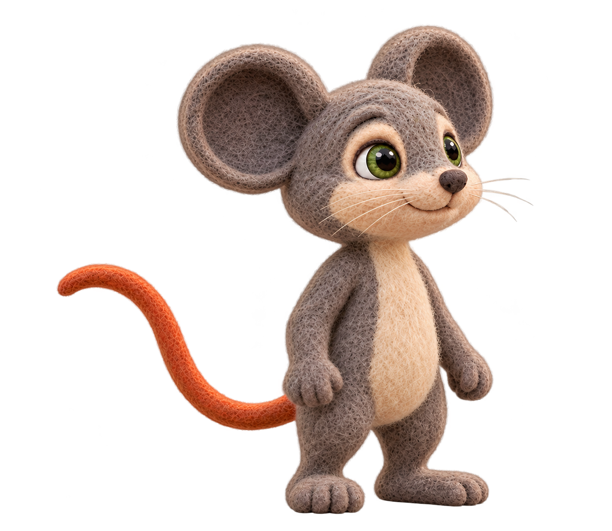
Stationary screen-right body and gaze, full silhouette and empty hands; no premature step. Gaze change is subtle versus forward pose and exact root/body projection is not demonstrated. Review needed for locked fork sequence.
milo_decision_stationary_3q_shortcut_r001_candidate.png
Scene uses: S03-L008-B01-I02
Owner verdict: pending
12 · milo.portrait.base.3q.look_up:default
Candidate — pending owner review
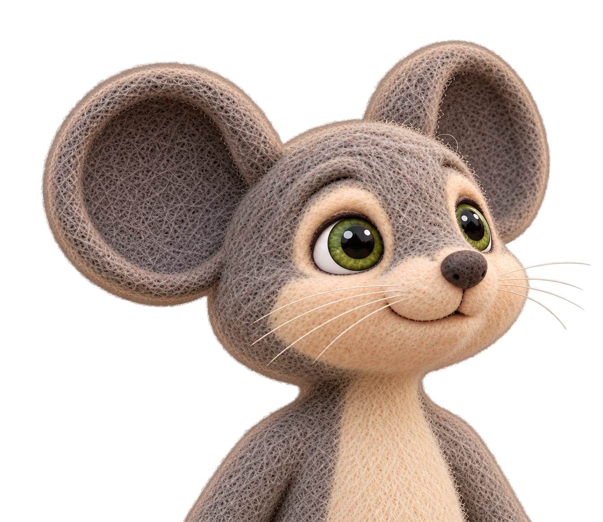
Upward-looking full-ear portrait with visible upper chest and closed toothless mouth. Right whisker ends approach frame edge. Head shape angle and neutral geometry need owner review before dependent expression generation.
milo_portrait_base_3q_look_up_r001_candidate.png
Scene uses: Angle-base dependency for later expressions
Owner verdict: pending
13 · milo.portrait.base.3q.look_left:default
Candidate — pending owner review
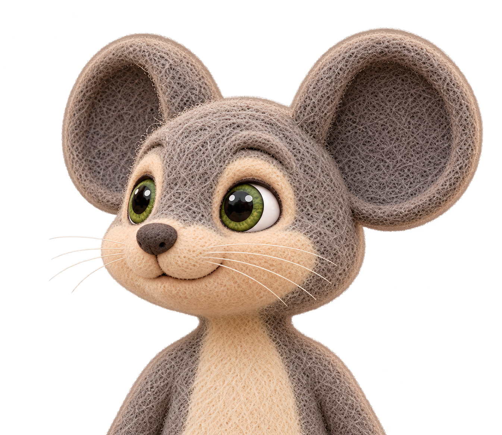
Left-looking three-quarter portrait, complete ears and upper chest, closed mouth and no visible teeth. Shoulder/chest projection also turns left; compatibility with required screen-right torso needs review. Not a certified angle-compatible overlay or approved geometry base.
milo_portrait_base_3q_look_left_r001_candidate.png
Scene uses: Angle-base dependency for later expressions
Owner verdict: pending
14 · milo.portrait.base.3q.look_right:default
Candidate — pending owner review
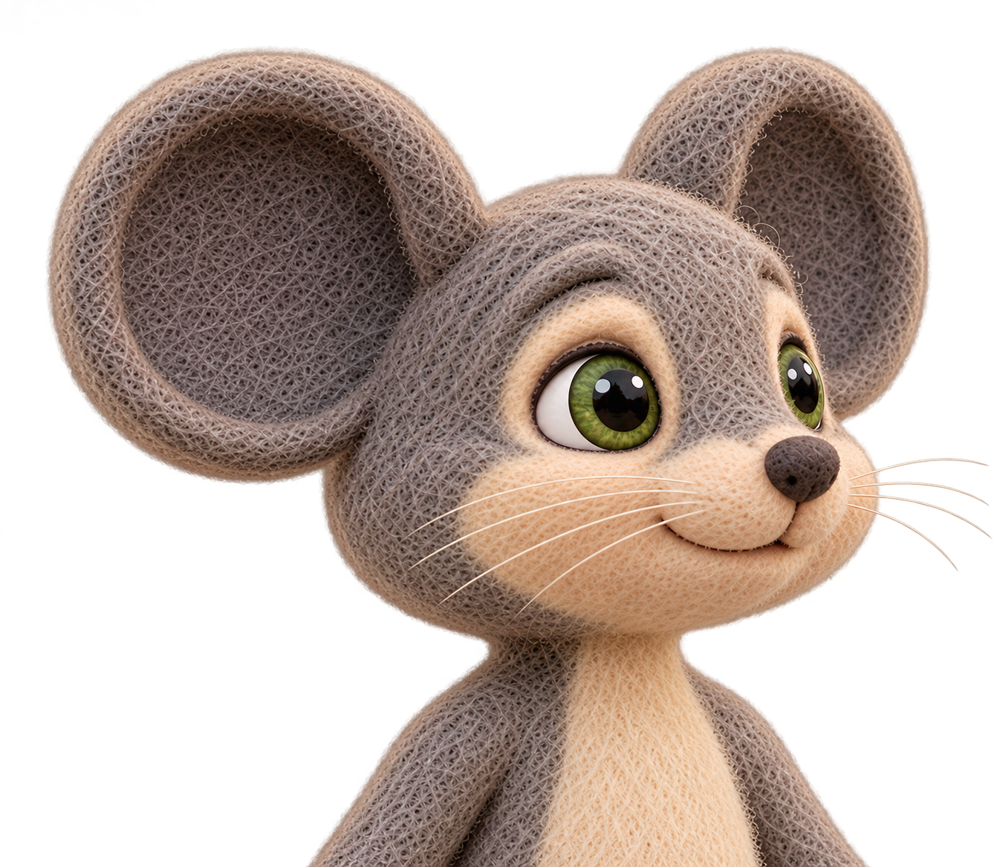
Right-looking three-quarter portrait with full ears, upper chest and closed toothless mouth. Right whiskers approach frame edge; difference from forward base is subtle and geometry compatibility still needs owner review. Alpha range 0–254: no fully opaque pixels; generated bytes preserved without repair.
milo_portrait_base_3q_look_right_r001_candidate.png
Scene uses: Angle-base dependency for later expressions
Owner verdict: pending